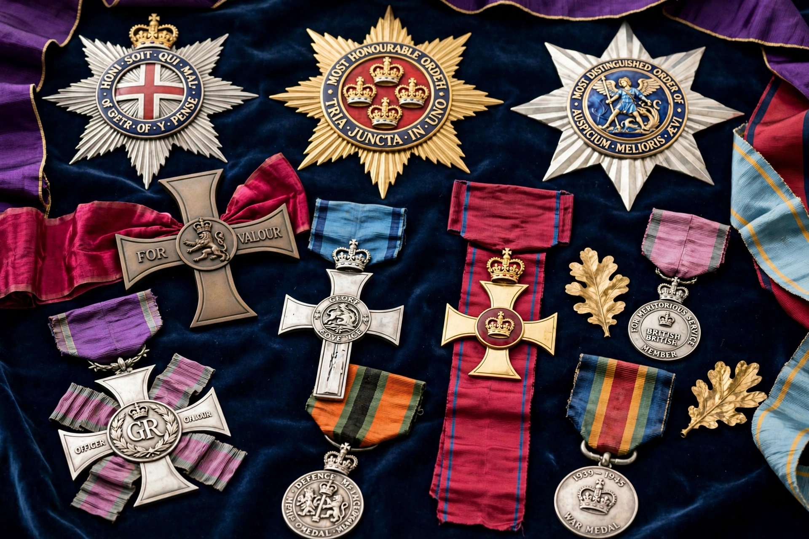

The orders, decorations, and medals of the United Kingdom comprise the British honours system, through which the monarch, as fount of honour, recognises personal bravery, achievement, and service. Appointments are generally published in The London Gazette in the New Year Honours and Birthday Honours lists.
The senior order is the Order of the Garter (founded 1348), followed by the Order of the Thistle for Scotland, and the Order of St Patrick ( dormant since Irish independence). The Order of the Bath, Order of the British Empire, Royal Victorian Order, and Order of Merit are widely awarded. Knights and dames use the prefixes Sir and Dame.
The Victoria Cross is the highest gallantry award, followed by the George Cross. Campaign medals have been issued from Waterloo onwards, and general service medals recognise operational service. The order of wear is prescribed by the Central Chancery.
Medieval orders modelled on crusading orders gave way, from the 19th century, to a broader merit system. Reforms under Tony Blair and later reviews removed automatic honours for some offices and emphasised community service, while controversies over political honours and forfeiture periodically recur.